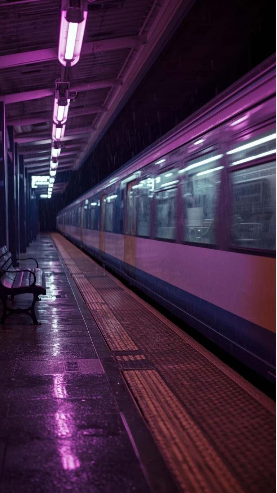
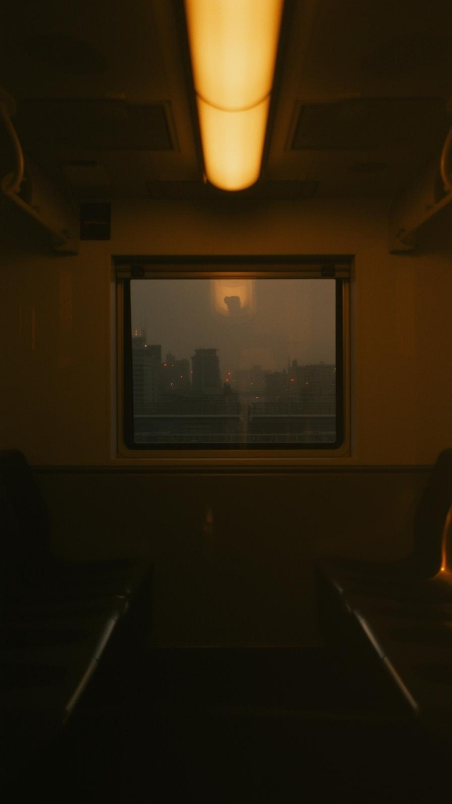
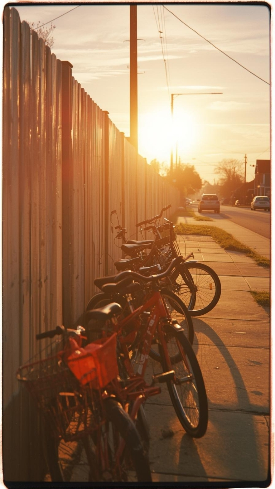
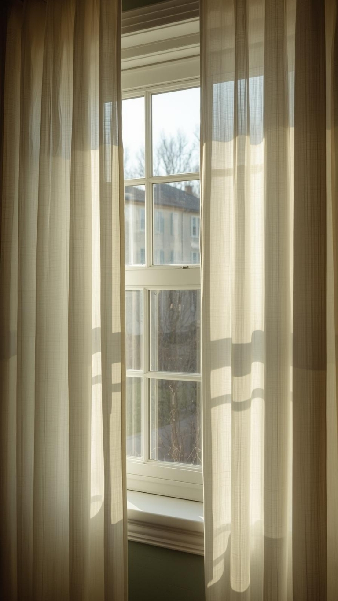

station lights
dim neon / soft city hum
▶

last train glow
midnight hush / soft longing
▶
neon cafe corners
late comfort / warm hush
▶
lantern-lit lanes
quiet wander / candle glow
▶
deep violet skies
twilight blur / soft ache
▶
golden hour trains
warm gold / quiet breath
▶
film grain sunset
dusty orange / soft rewind
▶

suburb sunset bikes
carefree dusk / breeze hair
▶
soft morning commute
steam rising / gentle optimism
▶
quiet campus afternoons
study hum / soft indie
▶
sunlit notebooks
bright calm / gentle clarity
▶

breeze-through windows
fresh air / slow contentment
▶